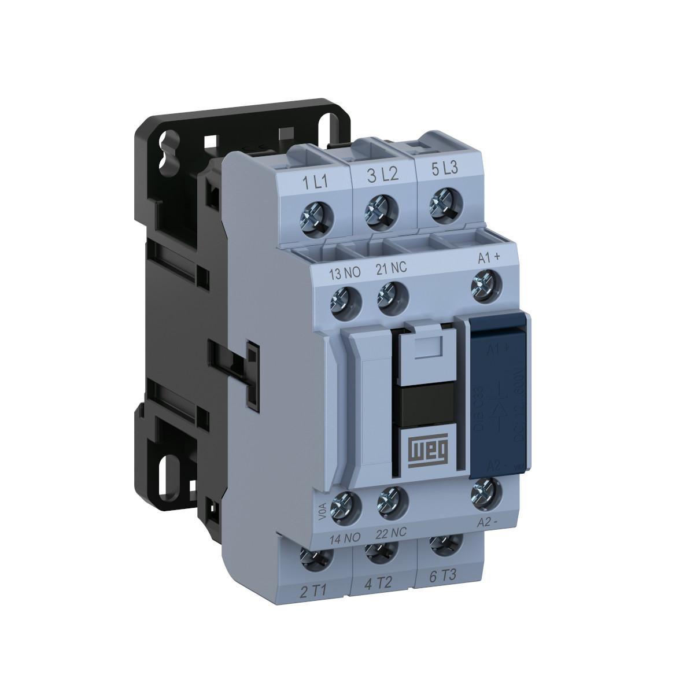
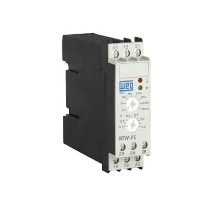
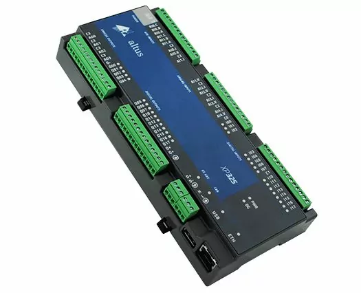
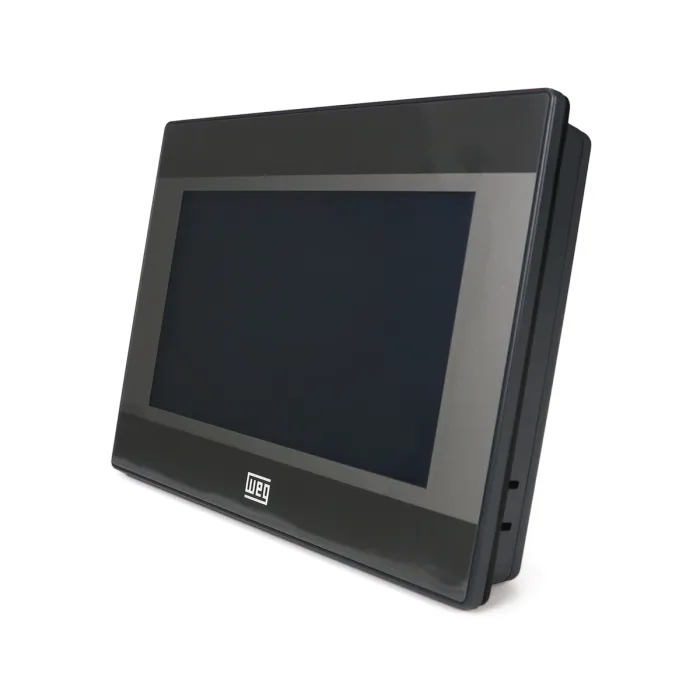
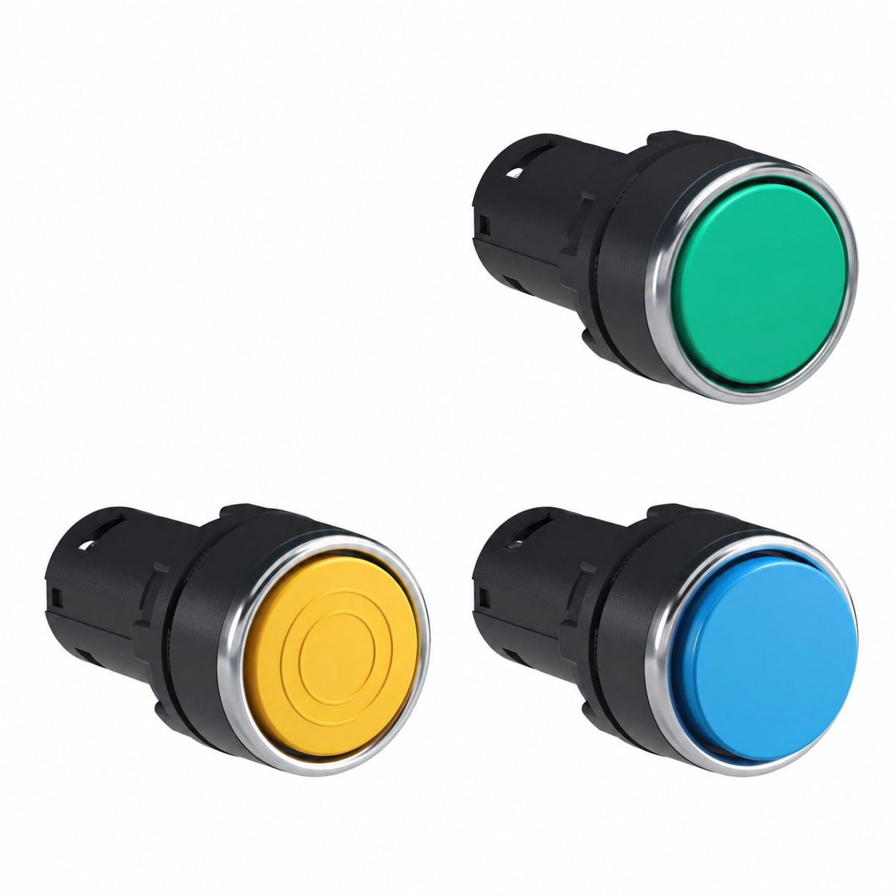
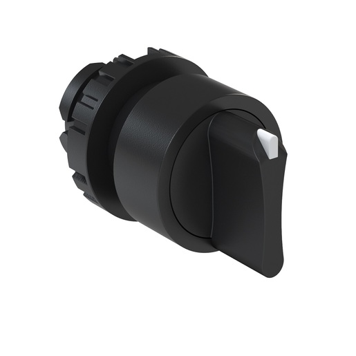
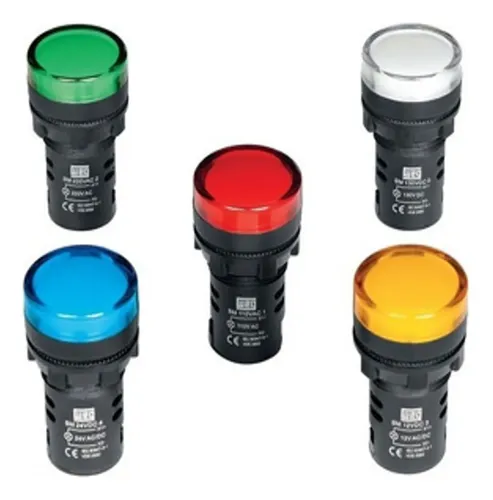

Nossos produtos

contatora
Uma contatora (ou contator) é um dispositivo eletromecânico que funciona como um interruptor de alta capacidade, projetado para ligar e desligar cargas elétricas pesadas de forma segura e automática.

relé termico
O relé térmico é um dispositivo de proteção elétrica projetado para evitar a queima de motores elétricos por sobrecarga. Ele monitora a corrente que passa pelo motor e desliga o circuito automaticamente se o equipamento puxar mais energia do que deveria, evitando o superaquecimento.

temporizador
Um temporizador (ou timer) é um dispositivo ou função que mede o tempo e realiza ações automáticas — como ligar, desligar ou pausar — baseadas em um intervalo específico. Ele serve para automatizar processos, economizar energia e garantir a precisão de tarefas rotineiras ou industriais.

CLP
O CLP (Controlador Lógico Programável) é um computador industrial robusto utilizado para automatizar máquinas e processos. Ele serve para monitorar sensores, processar dados e acionar atuadores com base em uma lógica programada, garantindo alta precisão, segurança e eficiência em linhas de montagem, manufatura e sistemas prediais.

modulo de expanção
Um módulo de expansão serve para aumentar a capacidade ou adicionar novas funções a um sistema existente.

IHM
A sigla IHM significa Interface Homem-Máquina. Trata-se de um dispositivo (geralmente uma tela sensível ao toque) que atua como uma ponte de comunicação entre o operador e um sistema automatizado ou máquina.

inversor de frequencia
O inversor de frequência é um dispositivo eletrônico que controla a velocidade e o torque de motores elétricos. Ele faz isso convertendo a energia da rede elétrica em tensões e frequências ajustáveis, permitindo que o motor funcione exatamente na rotação necessária para a máquina.

soft starter
Uma soft starter (ou chave de partida suave) é um dispositivo eletrônico usado para controlar a aceleração, a desaceleração e a proteção de motores elétricos trifásicos. Ela funciona como um "amortecedor" elétrico, evitando trancos mecânicos e picos de corrente na rede elétrica durante a partida do motor.

servo drive
O servo drive é o "cérebro" e a fonte de energia de um servomotor. Ele recebe comandos de um controlador (como um CLP ou CNC) e ajusta a energia para controlar com altíssima precisão a posição, a velocidade e o torque do motor em tempo real.

botueiras
As botoeiras (ou botões de comando) são dispositivos que servem para ligar, desligar, pausar ou alterar o funcionamento de máquinas e equipamentos elétricos. Elas funcionam como uma interface manual, permitindo que operadores controlem circuitos, sistemas de segurança ou acionamentos de emergência.

chave seletora
A chave seletora serve para alternar manualmente entre diferentes opções, circuitos ou modos de operação em um equipamento. Ela permite que o usuário escolha exatamente o que deseja ativar girando um botão ou movendo uma alavanca.

botão de emergência
O botão de emergência serve para interromper imediatamente operações ou sistemas em situações de perigo iminente. Ele protege vidas, evita acidentes graves e resguarda equipamentos.

sinaleiros
Os sinaleiros (ou sinalizadores) são dispositivos luminosos usados para indicar o status de operação de máquinas, painéis elétricos ou processos. Eles servem para comunicar visualmente se um equipamento está ligado, desligado ou em situação de emergência.